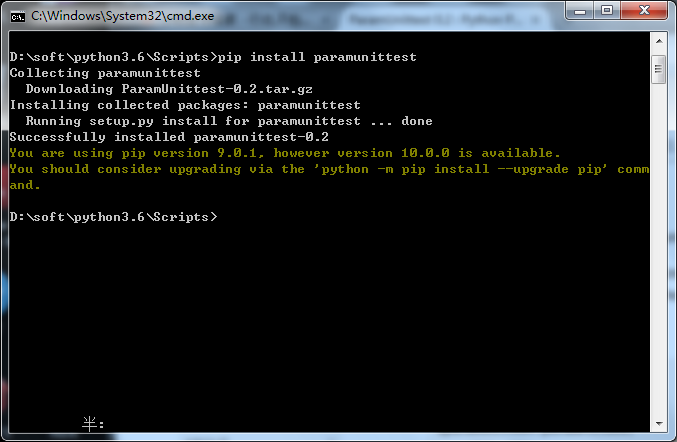
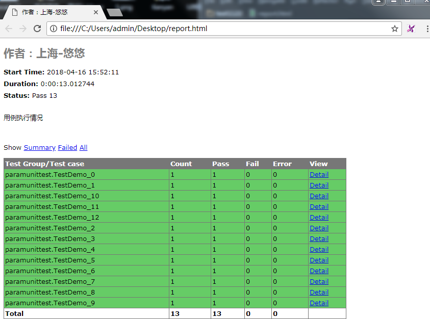

paramunittest是unittest实现参数化的一个专门的模块，可以传入多组参数，自动生成多个用例
前面讲数据驱动的时候，用ddt可以解决多组数据传入，自动生成多个测试用例。本篇继续介绍另外一个参数化的框架paramunittest，也能实现一样的效果。
1.先pip 下载安装 paramunittest
pip install paramunittest

1.官方文档地址：https://pypi.python.org/pypi/ParamUnittest/
2.github源码下载地址：https://github.com/rik0/ParamUnittest
3.官方文档上给出了2个使用案例，以下两种方法都是可以的，小编倾向于第二种，更容易理解一些，这里注意了，在pycharm里面运行的时候，最后鼠标要放到if下方执行。
4.加上这个参数verbosity=2是为了显示用例执行详情
verbosity=2
import unittest
import paramunittest
# 方案一
@paramunittest.parametrized(
('1', '2'),
#(4, 3),
('2', '3'),
(('4', ), {'b': '5'}),
((), {'a': 5, 'b': 6}),
{'a': 5, 'b': 6},
)
class TestFoo(paramunittest.ParametrizedTestCase):
def setParameters(self, a, b):
self.a = a
self.b = b
def testLess(self):
self.assertLess(self.a, self.b)
# 方案二
@paramunittest.parametrized(
('1', '2'),
#(4, 3),
('2', '3'),
(('4', ), {'b': '5'}),
((), {'a': 5, 'b': 6}),
{'a': 5, 'b': 6},
)
class TestBar(unittest.TestCase):
def setParameters(self, a, b):
self.a = a
self.b = b
def testLess(self):
self.assertLess(self.a, self.b)
if __name__ == "__main__":
unittest.main(verbosity=2)
1.从上面官方文档给的案例可以看出，参数可以传元组也可以传字典，先传字典参数，类似于如下这种一组参数：
{"user": "admin", "psw": "123", "result": "true"}
2.注意这里接受参数的时候，必须要定义setParameters这个方法，并且只能是这个名称。括号后面的参数分别接受传入的参数名称。前面定义的是字典，那参数就跟前面字典的key保持一致
import unittest
import paramunittest
import time
# python3.6
# 作者：上海-悠悠
@paramunittest.parametrized(
{"user": "admin", "psw": "123", "result": "true"},
{"user": "admin1", "psw": "1234", "result": "true"},
{"user": "admin2", "psw": "1234", "result": "true"},
{"user": "admin3", "psw": "1234", "result": "true"},
{"user": "admin4", "psw": "1234", "result": "true"},
{"user": "admin5", "psw": "1234", "result": "true"},
{"user": "admin6", "psw": "1234", "result": "true"},
{"user": "admin7", "psw": "1234", "result": "true"},
{"user": "admin8", "psw": "1234", "result": "true"},
{"user": "admin9", "psw": "1234", "result": "true"},
{"user": "admin10", "psw": "1234", "result": "true"},
{"user": "admin11", "psw": "1234", "result": "true"},
)
class TestDemo(unittest.TestCase):
def setParameters(self, user, psw, result):
'''这里注意了，user, psw, result三个参数和前面定义的字典一一对应'''
self.user = user
self.user = psw
self.result = result
def testcase(self):
print("开始执行用例：--------------")
time.sleep(0.5)
print("输入用户名：%s" % self.user)
print("输入密码：%s" % self.user)
print("期望结果：%s " % self.result)
time.sleep(0.5)
self.assertTrue(self.result == "true")
if __name__ == "__main__":
unittest.main(verbosity=2)3.执行结果：
开始执行用例：--------------
testcase (paramunittest.TestDemo_0) ... 输入用户名：123
输入密码：123
期望结果：true
ok
testcase (paramunittest.TestDemo_1) ... 开始执行用例：--------------
输入用户名：1234
输入密码：1234
期望结果：true
ok
testcase (paramunittest.TestDemo_10) ... 开始执行用例：--------------
输入用户名：1234
输入密码：1234
期望结果：true
开始执行用例：--------------
ok
testcase (paramunittest.TestDemo_11) ... 输入用户名：1234
输入密码：1234
期望结果：true
开始执行用例：--------------
ok
testcase (paramunittest.TestDemo_2) ... 输入用户名：1234
输入密码：1234
期望结果：true
ok
开始执行用例：--------------
testcase (paramunittest.TestDemo_3) ... 输入用户名：1234
输入密码：1234
期望结果：true
ok
testcase (paramunittest.TestDemo_4) ... 开始执行用例：--------------
输入用户名：1234
输入密码：1234
期望结果：true
ok
testcase (paramunittest.TestDemo_5) ... 开始执行用例：--------------
输入用户名：1234
输入密码：1234
期望结果：true
开始执行用例：--------------
ok
testcase (paramunittest.TestDemo_6) ... 输入用户名：1234
输入密码：1234
期望结果：true
开始执行用例：--------------
ok
testcase (paramunittest.TestDemo_7) ... 输入用户名：1234
输入密码：1234
期望结果：true
ok
开始执行用例：--------------
testcase (paramunittest.TestDemo_8) ... 输入用户名：1234
输入密码：1234
期望结果：true
ok
testcase (paramunittest.TestDemo_9) ... 开始执行用例：--------------
输入用户名：1234
输入密码：1234
期望结果：true
ok
----------------------------------------------------------------------
Ran 12 tests in 12.001s4.注意了，这里的执行顺序是先执行0，1，再执行10，11，12依次来的，别问我为什么，也别找我解决，设计如此，之前ddt框架也是有同样的问题。
5.除了传字典参数，传元组类型的也是可以的
@paramunittest.parametrized(
("admin", "123", "true"),
("admin1", "123", "true"),
("admin2", "123", "true"),
("admin3", "123", "true"),
("admin4", "123", "true"),
("admin5", "123", "true"),
("admin6", "123", "true"),
("admin7", "123", "true"),
("admin8", "123", "true"),
("admin9", "123", "true"),
("admin10", "123", "true"),
("admin11", "123", "true"),
("admin12", "123", "true")
)
1.unittest生成html报告参考前面介绍的这篇http://www.cnblogs.com/yoyoketang/p/6680503.html就可以了，这里就不重复介绍了，实现的效果图如下：
